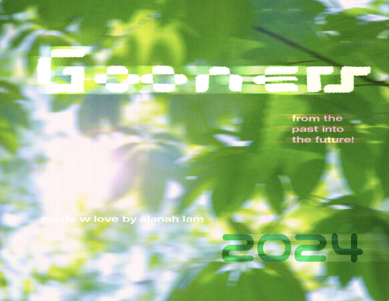
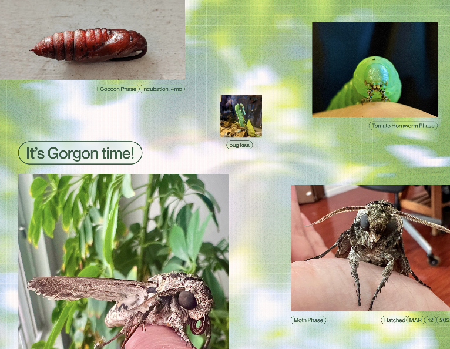
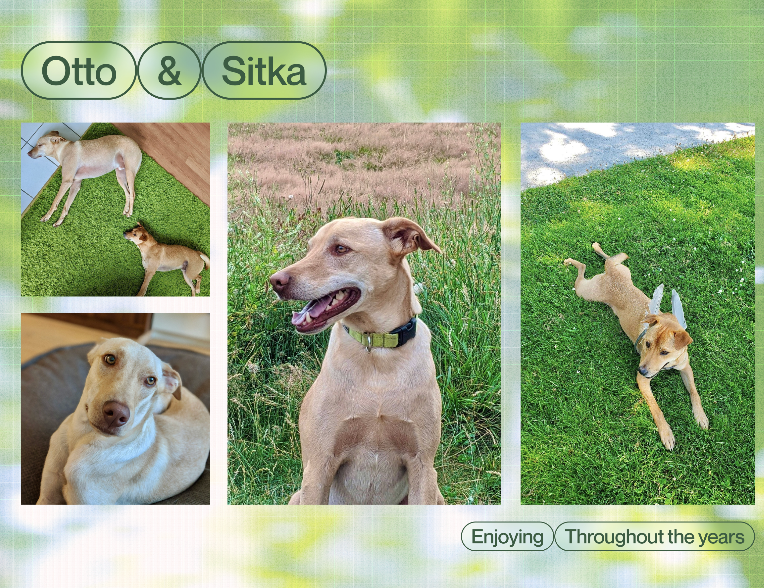

A list of resources i like
Is it raining?
tfw too many thoughts before bed
🔗 alanah's guide to
YVR
etc
Lately I've been thinking about how timefulness is a reverse function of how long I am on the internet in that neither do I feel clearer or see clearer the more I'm online. It's like i'm on-----line, there's a deadspace that comes with browsing browsing browsing browsing
browsing browsing browsing browsing
browsing browsing browsing browsing
browsing browsing browsing browsing
browsing browsing browsing browsing
I'm seeking with no end it feels like a gluttonous consumption of hypermedia
This christmas (2023) i designed + printed a calendar for my partner and our families to look back on all the birds, bugs, flora + fauna we have seen in the last 2.5 years. Below are some of my favourite spreads —


